3. Bubble dynamics
气泡动力学
From a moving radius to a pressure field. Corresponding to Theory 03, source page 3.
从变化的半径到压力场。对应 Theory 03，原始材料第3页。
This is the central mechanics derivation.
这是整套理论中最核心的力学推导。
The spherical model assumes a bubble of radius , approximately uniform internal pressure , and an unbounded incompressible surrounding liquid. Let the liquid density and dynamic viscosity be and , and its distant pressure be . We neglect the correction to interface kinematics caused by mass transfer.
球对称模型假设气泡半径为 ，内部压力 近似均匀，周围为无界、不可压缩液体。液体密度和动力黏度分别记为 和 ，远处液体压力为 。这里忽略质量传递对界面运动学条件造成的修正。
These are the classical assumptions behind the radial flow and Rayleigh–Plesset framework; they are not assumptions of a fully resolved near-wall bubble. [R1]
这些是径向流动与 Rayleigh–Plesset 框架背后的经典假设，并不等同于对近壁气泡进行完全解析时所采用的模型。[R1]
3.1 Continuity determines the liquid velocity
连续性方程确定液体速度
For a purely radial, incompressible flow,
对于纯径向不可压缩流动，
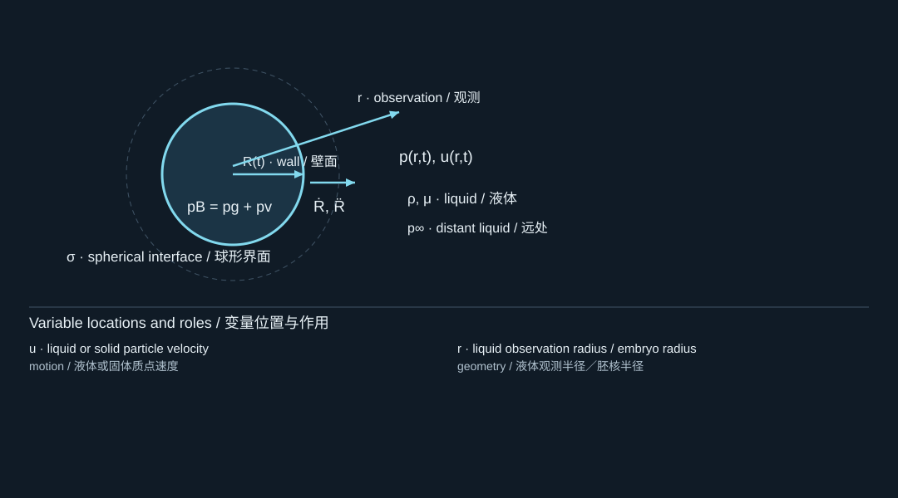
The diagram locates the physical system; its key lists the symbols in the formula. Read the definition in the surrounding derivation when a letter has different roles.
图示标出物理体系，图例列出公式中的符号。若某字母有多种作用，应以邻近推导中的定义为准。
Thus,
因此
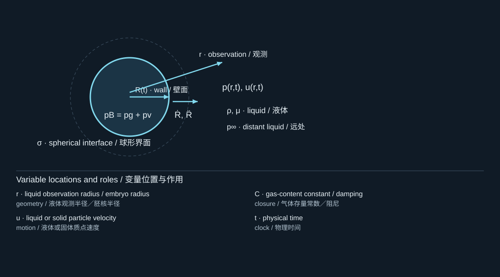
The diagram locates the physical system; its key lists the symbols in the formula. Read the definition in the surrounding derivation when a letter has different roles.
图示标出物理体系，图例列出公式中的符号。若某字母有多种作用，应以邻近推导中的定义为准。
At the bubble wall, the liquid follows the interface:
在气泡壁面处，液体跟随界面运动：
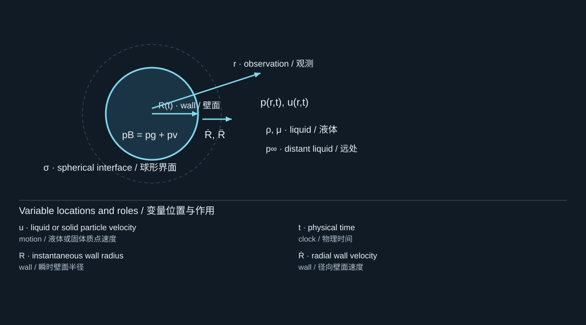
The diagram locates the physical system; its key lists the symbols in the formula. Read the definition in the surrounding derivation when a letter has different roles.
图示标出物理体系，图例列出公式中的符号。若某字母有多种作用，应以邻近推导中的定义为准。
Therefore,
于是
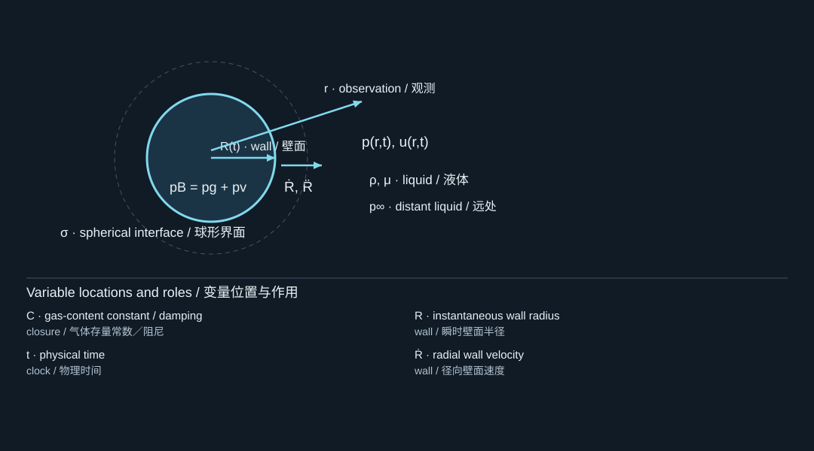
The diagram locates the physical system; its key lists the symbols in the formula. Read the definition in the surrounding derivation when a letter has different roles.
图示标出物理体系，图例列出公式中的符号。若某字母有多种作用，应以邻近推导中的定义为准。
and
从而
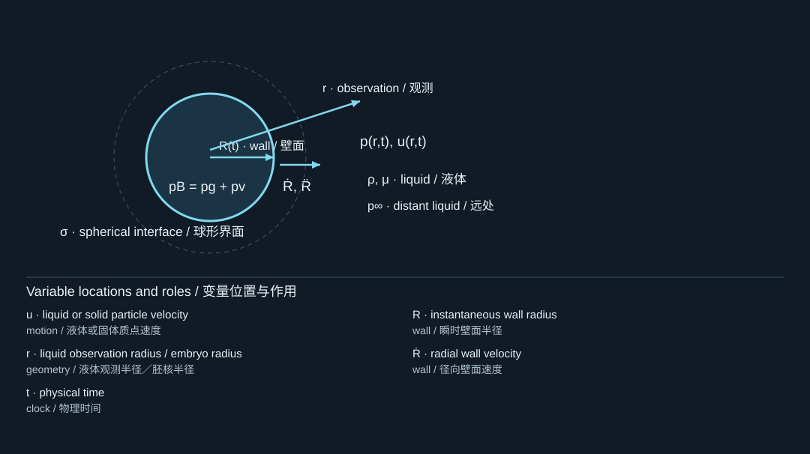
The diagram locates the physical system; its key lists the symbols in the formula. Read the definition in the surrounding derivation when a letter has different roles.
图示标出物理体系，图例列出公式中的符号。若某字母有多种作用，应以邻近推导中的定义为准。
The interpretation is simple: the same instantaneous volume flux passes through every concentric spherical surface,
其物理含义很简单：通过每一个同心球面的瞬时体积流量都相同，即
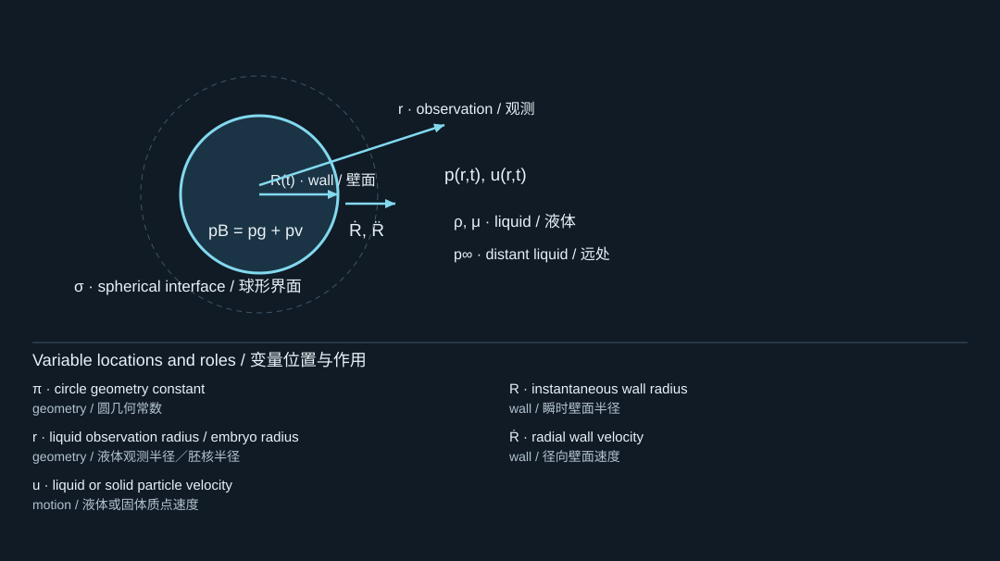
The diagram locates the physical system; its key lists the symbols in the formula. Read the definition in the surrounding derivation when a letter has different roles.
图示标出物理体系，图例列出公式中的符号。若某字母有多种作用，应以邻近推导中的定义为准。
The entire radial velocity field is therefore determined by one coordinate, .
因此，整个径向速度场由单个坐标 决定。
3.2 The velocity potential gives the pressure field
由速度势求得压力场
Introduce a velocity potential such that
引入速度势 ，使其满足
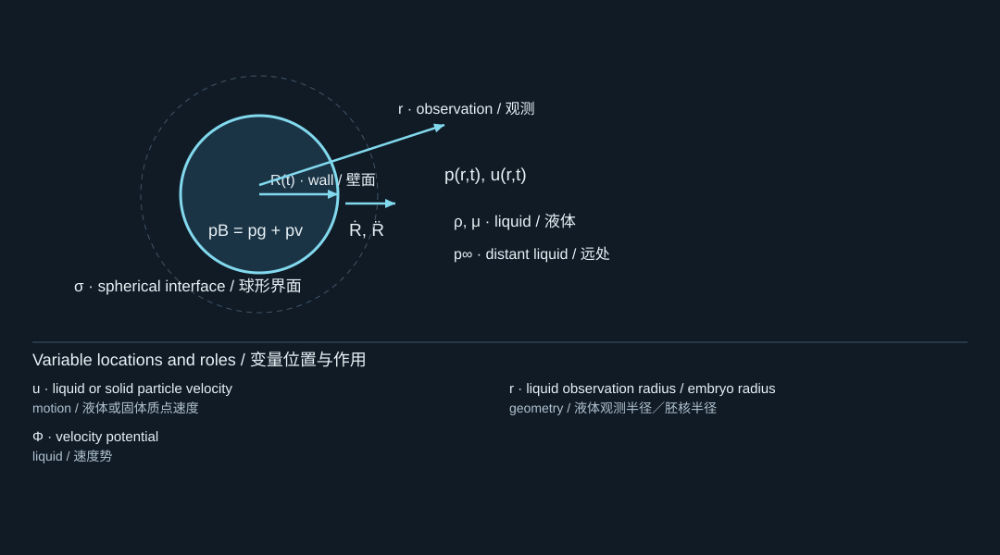
The diagram locates the physical system; its key lists the symbols in the formula. Read the definition in the surrounding derivation when a letter has different roles.
图示标出物理体系，图例列出公式中的符号。若某字母有多种作用，应以邻近推导中的定义为准。
Choosing at infinity,
取无穷远处 ，则
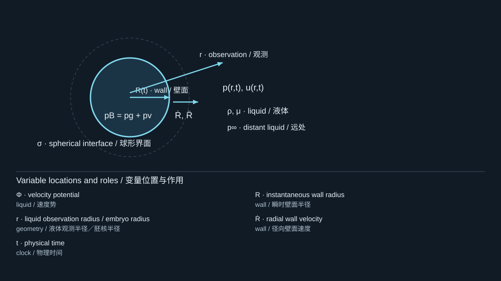
The diagram locates the physical system; its key lists the symbols in the formula. Read the definition in the surrounding derivation when a letter has different roles.
图示标出物理体系，图例列出公式中的符号。若某字母有多种作用，应以邻近推导中的定义为准。
The unsteady Bernoulli relation is
非定常 Bernoulli 关系为
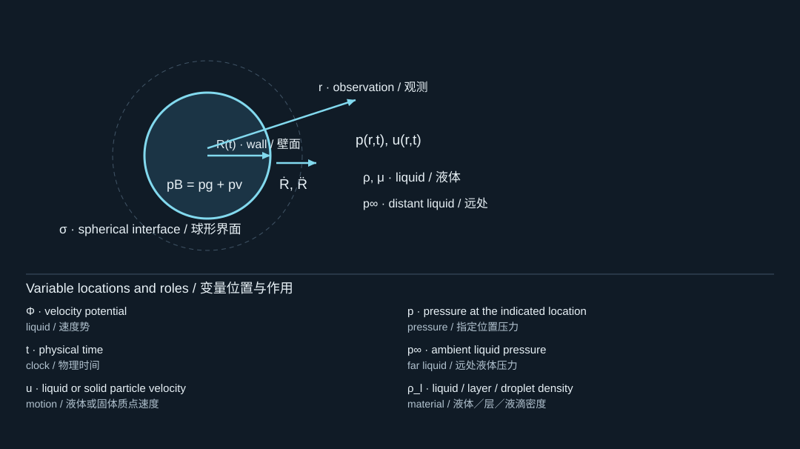
The diagram locates the physical system; its key lists the symbols in the formula. Read the definition in the surrounding derivation when a letter has different roles.
图示标出物理体系，图例列出公式中的符号。若某字母有多种作用，应以邻近推导中的定义为准。
The time derivative is taken at a fixed spatial location :
时间偏导数是在固定空间位置 处计算的：
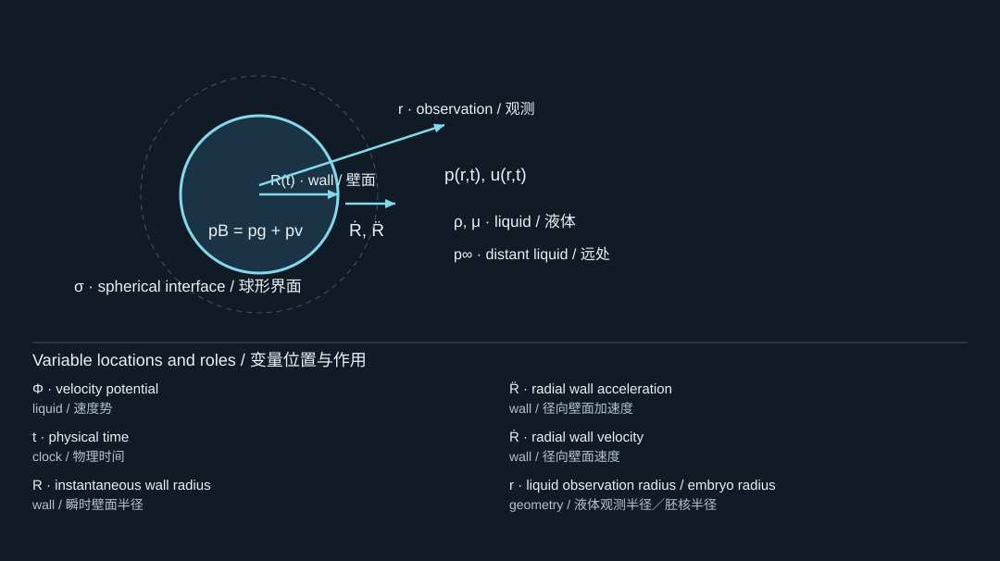
The diagram locates the physical system; its key lists the symbols in the formula. Read the definition in the surrounding derivation when a letter has different roles.
图示标出物理体系，图例列出公式中的符号。若某字母有多种作用，应以邻近推导中的定义为准。
Also,
同时，
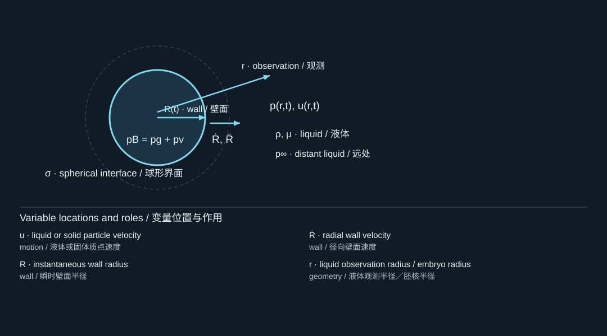
The diagram locates the physical system; its key lists the symbols in the formula. Read the definition in the surrounding derivation when a letter has different roles.
图示标出物理体系，图例列出公式中的符号。若某字母有多种作用，应以邻近推导中的定义为准。
Consequently,
因此
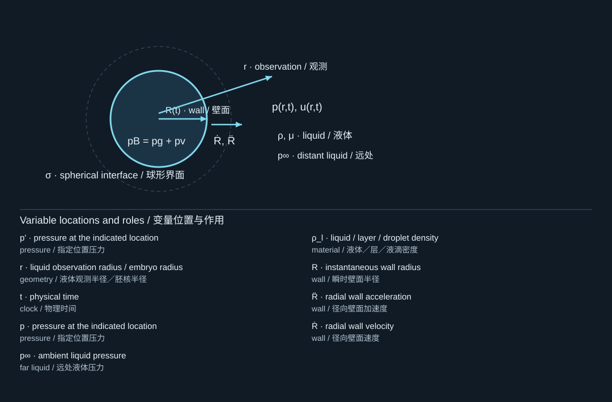
The diagram locates the physical system; its key lists the symbols in the formula. Read the definition in the surrounding derivation when a letter has different roles.
图示标出物理体系，图例列出公式中的符号。若某字母有多种作用，应以邻近推导中的定义为准。
This reconstructs the pressure-mapping equation shown on source page 3. [S1, p. 3]
这就重构了原始材料第3页所示的压力映射方程。[S1，第3页]
Define
定义
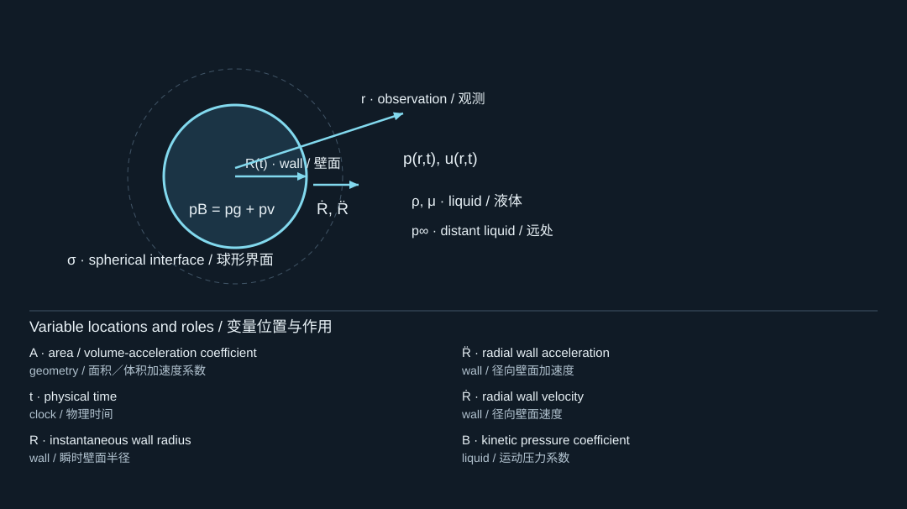
The diagram locates the physical system; its key lists the symbols in the formula. Read the definition in the surrounding derivation when a letter has different roles.
图示标出物理体系，图例列出公式中的符号。若某字母有多种作用，应以邻近推导中的定义为准。
Then
则
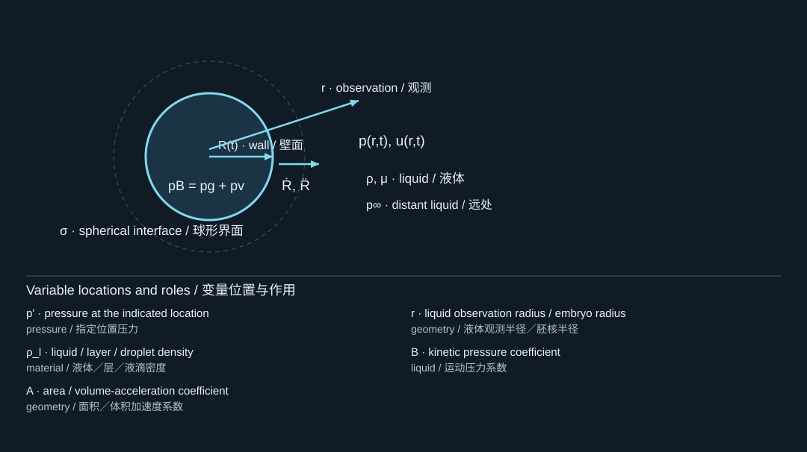
The diagram locates the physical system; its key lists the symbols in the formula. Read the definition in the surrounding derivation when a letter has different roles.
图示标出物理体系，图例列出公式中的符号。若某字母有多种作用，应以邻近推导中的定义为准。
The leading term has an especially useful interpretation. Since
主导项具有一个特别有用的物理解释。由于
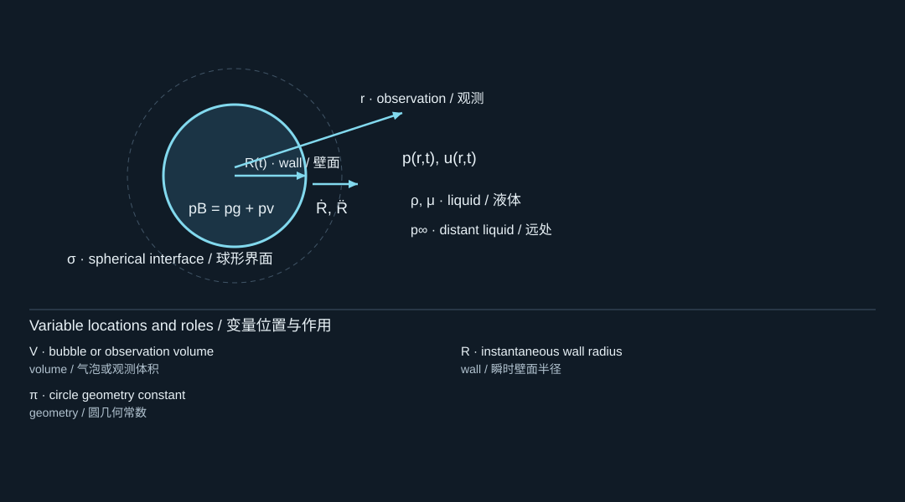
The diagram locates the physical system; its key lists the symbols in the formula. Read the definition in the surrounding derivation when a letter has different roles.
图示标出物理体系，图例列出公式中的符号。若某字母有多种作用，应以邻近推导中的定义为准。
we have
可得
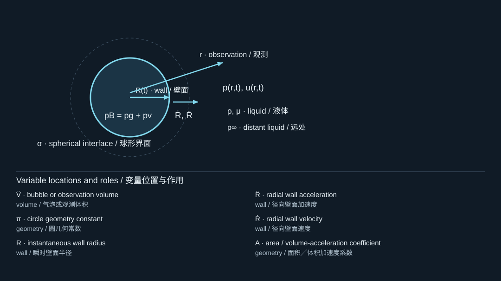
The diagram locates the physical system; its key lists the symbols in the formula. Read the definition in the surrounding derivation when a letter has different roles.
图示标出物理体系，图例列出公式中的符号。若某字母有多种作用，应以邻近推导中的定义为准。
Thus,
因此
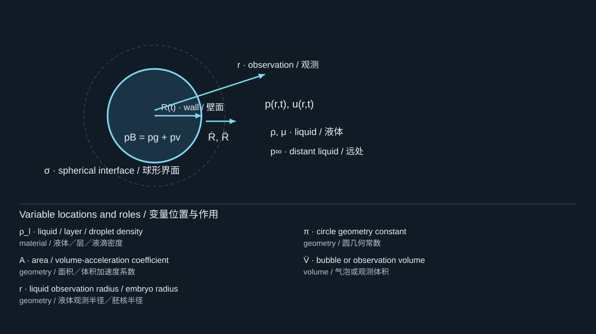
The diagram locates the physical system; its key lists the symbols in the formula. Read the definition in the surrounding derivation when a letter has different roles.
图示标出物理体系，图例列出公式中的符号。若某字母有多种作用，应以邻近推导中的定义为准。
Pressure is closely connected to bubble-volume acceleration, not merely to bubble size or whether the bubble is growing.
压力与气泡体积的二阶时间导数密切相关，而不仅仅取决于气泡尺寸，或气泡是否正在增长。
That is why an expanding bubble can produce a negative pressure perturbation while its expansion decelerates.
因此，一个正在膨胀的气泡，在膨胀过程减速时，也可能产生负的压力扰动。
3.3 Applying the wall condition gives Rayleigh–Plesset
由壁面条件得到 Rayleigh–Plesset 方程
Evaluate the pressure relation at :
在 处计算上述压力关系：
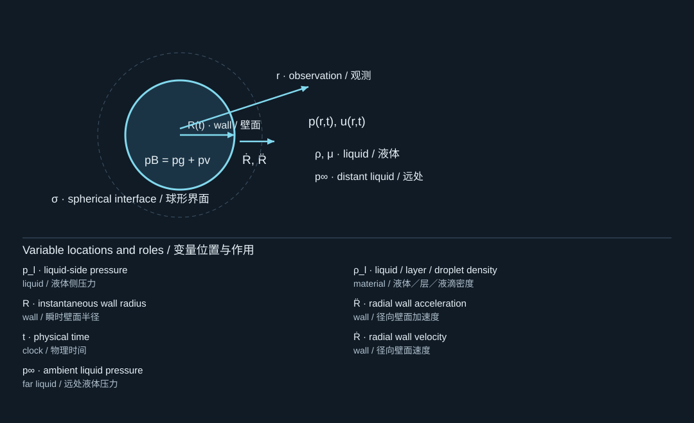
The diagram locates the physical system; its key lists the symbols in the formula. Read the definition in the surrounding derivation when a letter has different roles.
图示标出物理体系，图例列出公式中的符号。若某字母有多种作用，应以邻近推导中的定义为准。
Therefore,
因此

The diagram locates the physical system; its key lists the symbols in the formula. Read the definition in the surrounding derivation when a letter has different roles.
图示标出物理体系，图例列出公式中的符号。若某字母有多种作用，应以邻近推导中的定义为准。
Here is the liquid pressure immediately outside the interface. It differs from the bubble pressure because of surface tension and viscous normal stress.
这里的 是紧邻界面外侧的液体压力。由于表面张力和黏性法向应力的存在，它与气泡内部压力并不相同。
Let denote surface tension. The normal-stress condition is
以 表示表面张力。法向应力条件为
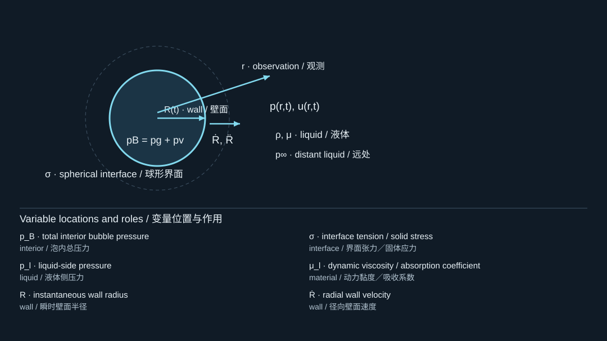
The diagram locates the physical system; its key lists the symbols in the formula. Read the definition in the surrounding derivation when a letter has different roles.
图示标出物理体系，图例列出公式中的符号。若某字母有多种作用，应以邻近推导中的定义为准。
The term follows from the force balance on a hemispherical interface. The viscous term follows from
其中， 项由半球形界面的受力平衡得到。黏性项来自
The diagram locates the physical system; its key lists the symbols in the formula. Read the definition in the surrounding derivation when a letter has different roles.
图示标出物理体系，图例列出公式中的符号。若某字母有多种作用，应以邻近推导中的定义为准。
and the Newtonian normal stress .
以及牛顿流体的黏性法向应力 。
Substituting yields
代入可得
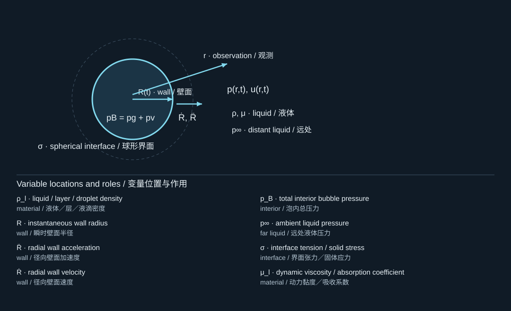
The diagram locates the physical system; its key lists the symbols in the formula. Read the definition in the surrounding derivation when a letter has different roles.
图示标出物理体系，图例列出公式中的符号。若某字母有多种作用，应以邻近推导中的定义为准。
This is the Rayleigh–Plesset equation printed in the source. [S1, p. 3]
这就是原始材料给出的 Rayleigh–Plesset 方程。[S1，第3页]
Its structure should look familiar:
它的结构应当十分熟悉：
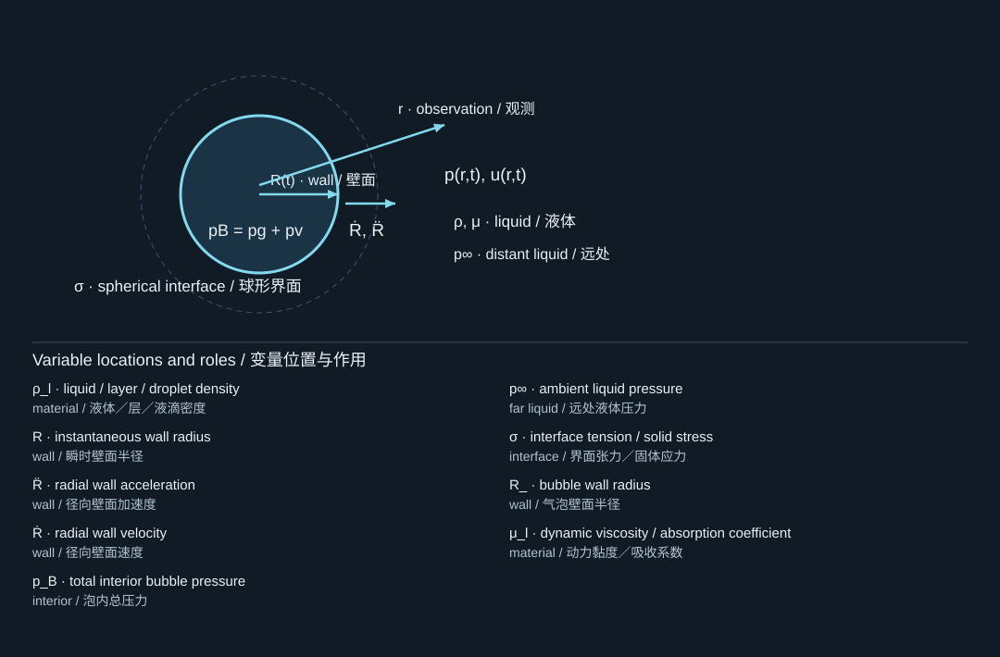
The diagram locates the physical system; its key lists the symbols in the formula. Read the definition in the surrounding derivation when a letter has different roles.
图示标出物理体系，图例列出公式中的符号。若某字母有多种作用，应以邻近推导中的定义为准。
One subtlety is that viscosity can appear in the wall stress even though we used the potential-flow pressure relation: for this incompressible spherical velocity field, the bulk viscous-force term vanishes, while the interfacial viscous stress does not.
一个细节是：虽然采用了势流压力关系，黏性仍然可以出现在壁面应力中。对于这一不可压缩球对称速度场，液体内部的黏性力项为零，但界面处的黏性应力并不为零。
Why this equation does not yet predict laser-induced growth
为什么该方程还不能预测激光诱导增长
Rayleigh–Plesset determines only after the internal pressure is specified consistently.
只有在以自洽方式给定内部压力之后，Rayleigh–Plesset 方程才能确定 。
For a laser-heated, vaporizing droplet, that requires additional thermal and phase-change information. The source does not supply a closed internal-pressure, heat-transfer, and mass-transfer model. Instead, it uses Rayleigh–Plesset inversely:
对于受到激光加热并发生汽化的液滴，这需要额外的热学和相变信息。原始材料没有提供闭合的内部压力、传热与传质模型，而是反向使用 Rayleigh–Plesset 方程：
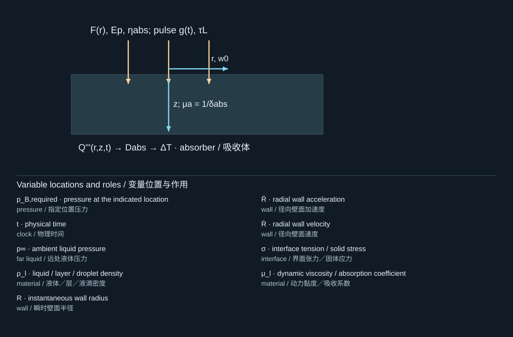
The diagram locates the physical system; its key lists the symbols in the formula. Read the definition in the surrounding derivation when a letter has different roles.
图示标出物理体系，图例列出公式中的符号。若某字母有多种作用，应以邻近推导中的定义为准。
Given a prescribed , this asks what internal pressure would be required to support that trajectory. It is a consistency check, not a forward prediction of activation and growth. [S1, p. 3]
在给定人为规定的 后，这个式子回答的是：维持该轨迹需要怎样的内部压力？它属于一致性检查，而不是对激活与增长的正向预测。[S1，第3页]
3.4 Deriving the Rayleigh collapse time
推导 Rayleigh 塌缩时间
The collapse-time estimate comes from a simpler limiting problem.
塌缩时间估计来自一个更简单的极限问题。
Assume constant bubble pressure , constant external pressure , negligible surface tension and viscosity, and an initially stationary bubble of radius . Define
假设气泡内部压力恒为 ，外界压力恒为 ，表面张力与黏性可忽略，且气泡初始静止、半径为 。定义
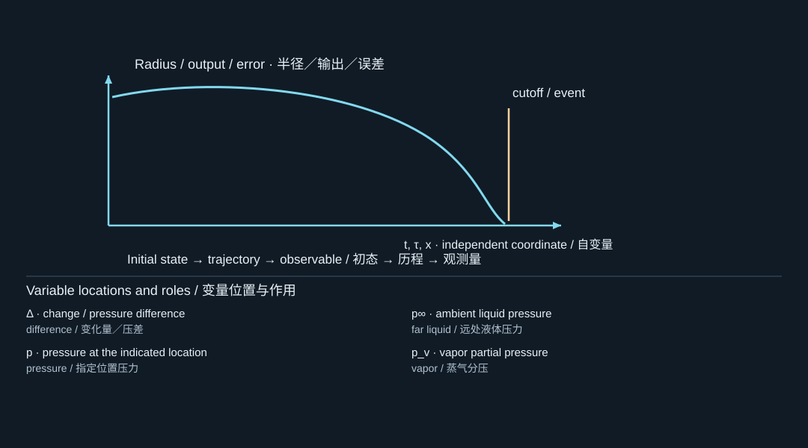
The diagram locates the physical system; its key lists the symbols in the formula. Read the definition in the surrounding derivation when a letter has different roles.
图示标出物理体系，图例列出公式中的符号。若某字母有多种作用，应以邻近推导中的定义为准。
Then
则
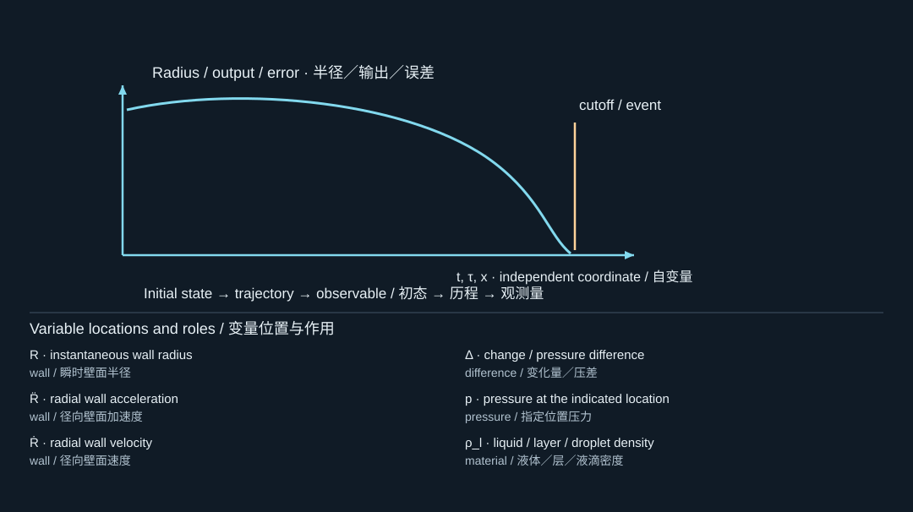
The diagram locates the physical system; its key lists the symbols in the formula. Read the definition in the surrounding derivation when a letter has different roles.
图示标出物理体系，图例列出公式中的符号。若某字母有多种作用，应以邻近推导中的定义为准。
Set . Along the trajectory,
令 。沿着运动轨迹有
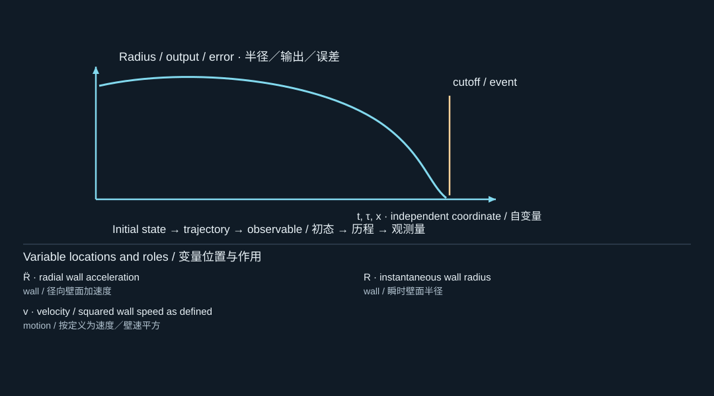
The diagram locates the physical system; its key lists the symbols in the formula. Read the definition in the surrounding derivation when a letter has different roles.
图示标出物理体系，图例列出公式中的符号。若某字母有多种作用，应以邻近推导中的定义为准。
so
因此
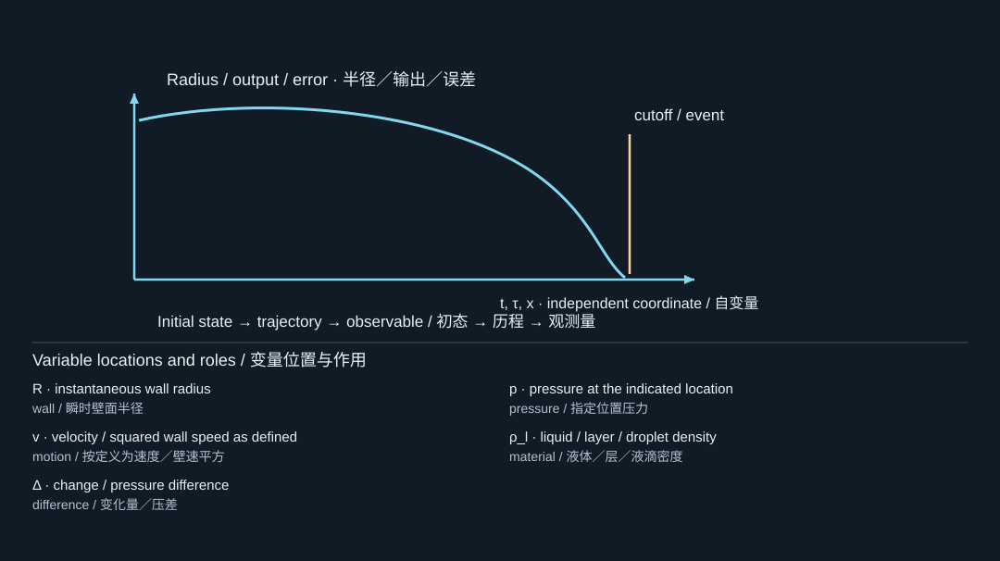
The diagram locates the physical system; its key lists the symbols in the formula. Read the definition in the surrounding derivation when a letter has different roles.
图示标出物理体系，图例列出公式中的符号。若某字母有多种作用，应以邻近推导中的定义为准。
Multiplication by gives
两边乘以 ，得到

The diagram locates the physical system; its key lists the symbols in the formula. Read the definition in the surrounding derivation when a letter has different roles.
图示标出物理体系，图例列出公式中的符号。若某字母有多种作用，应以邻近推导中的定义为准。
Using ,
利用 ，得到
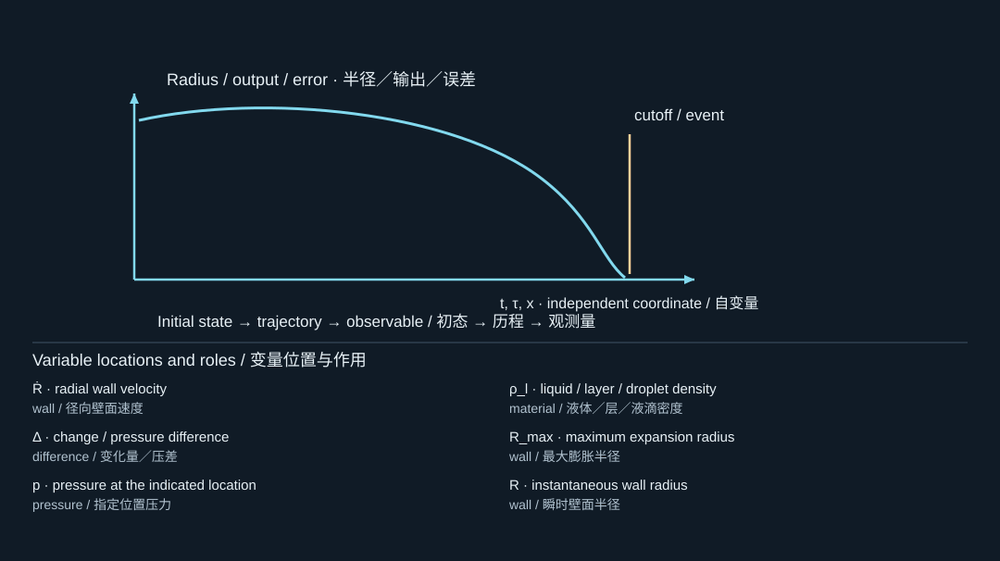
The diagram locates the physical system; its key lists the symbols in the formula. Read the definition in the surrounding derivation when a letter has different roles.
图示标出物理体系，图例列出公式中的符号。若某字母有多种作用，应以邻近推导中的定义为准。
During collapse, take the negative square root. The time to reach zero radius is
在塌缩阶段，应取负平方根。到达零半径所需的时间为
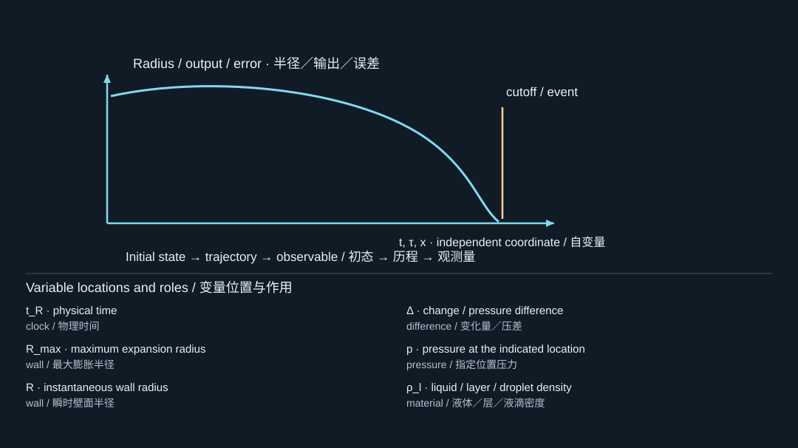
The diagram locates the physical system; its key lists the symbols in the formula. Read the definition in the surrounding derivation when a letter has different roles.
图示标出物理体系，图例列出公式中的符号。若某字母有多种作用，应以邻近推导中的定义为准。
With ,
令 ，则
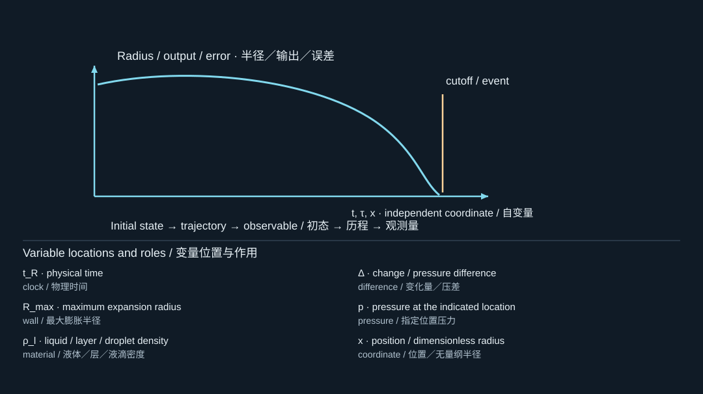
The diagram locates the physical system; its key lists the symbols in the formula. Read the definition in the surrounding derivation when a letter has different roles.
图示标出物理体系，图例列出公式中的符号。若某字母有多种作用，应以邻近推导中的定义为准。
Evaluation of the dimensionless integral gives
计算该无量纲积分可得
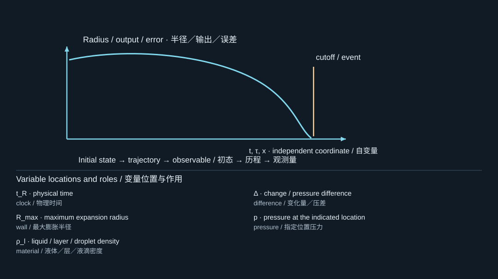
The diagram locates the physical system; its key lists the symbols in the formula. Read the definition in the surrounding derivation when a letter has different roles.
图示标出物理体系，图例列出公式中的符号。若某字母有多种作用，应以邻近推导中的定义为准。
This is the origin of the coefficient , rather than an empirical fitting factor.
这就是系数 的来源；它不是经验拟合系数。
The source reports for its reference case and uses it only as a timescale check. Its prescribed trajectory does not actually collapse to zero radius. [S1, p. 3]
原始材料给出的参考情景结果为 ，并仅将其用于时间尺度检查。材料中人为规定的轨迹实际上并不会塌缩到零半径。[S1，第3页]
3.5 Deriving the prescribed smooth trajectory
推导规定的平滑轨迹
The source constructs a smooth radius history instead of solving a forward cavitation problem.
原始材料构造了一条平滑的半径历程，而没有求解正向空化问题。
We want a function , , satisfying
需要构造函数 ，其中 ，并满足
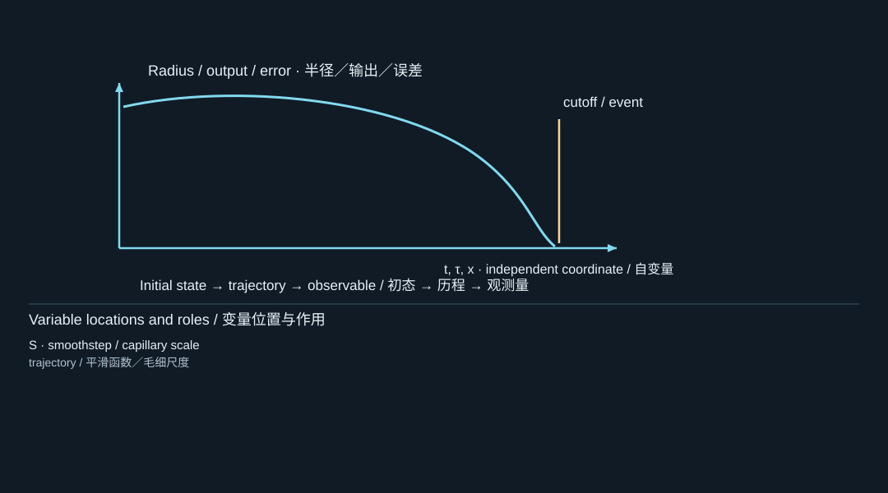
The diagram locates the physical system; its key lists the symbols in the formula. Read the definition in the surrounding derivation when a letter has different roles.
图示标出物理体系，图例列出公式中的符号。若某字母有多种作用，应以邻近推导中的定义为准。
and
以及
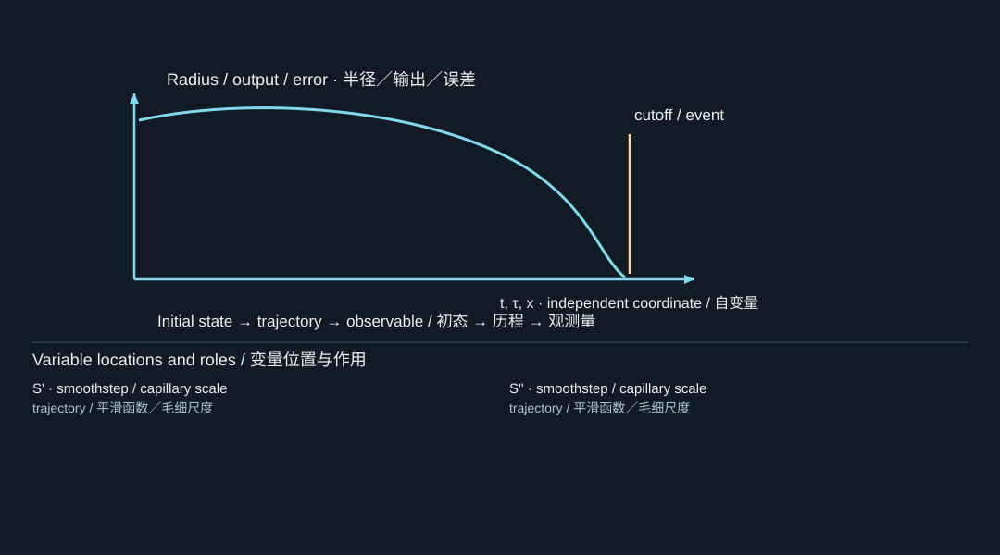
The diagram locates the physical system; its key lists the symbols in the formula. Read the definition in the surrounding derivation when a letter has different roles.
图示标出物理体系，图例列出公式中的符号。若某字母有多种作用，应以邻近推导中的定义为准。
These six conditions determine a fifth-degree polynomial:
这六个条件确定了一个五次多项式：
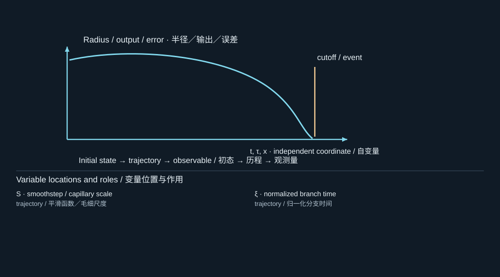
The diagram locates the physical system; its key lists the symbols in the formula. Read the definition in the surrounding derivation when a letter has different roles.
图示标出物理体系，图例列出公式中的符号。若某字母有多种作用，应以邻近推导中的定义为准。
Its derivatives are
其导数为
The diagram locates the physical system; its key lists the symbols in the formula. Read the definition in the surrounding derivation when a letter has different roles.
图示标出物理体系，图例列出公式中的符号。若某字母有多种作用，应以邻近推导中的定义为准。
The diagram locates the physical system; its key lists the symbols in the formula. Read the definition in the surrounding derivation when a letter has different roles.
图示标出物理体系，图例列出公式中的符号。若某字母有多种作用，应以邻近推导中的定义为准。
Let , with growth time and shrinkage time . Then
令 ，增长时间为 ，收缩时间为 。则
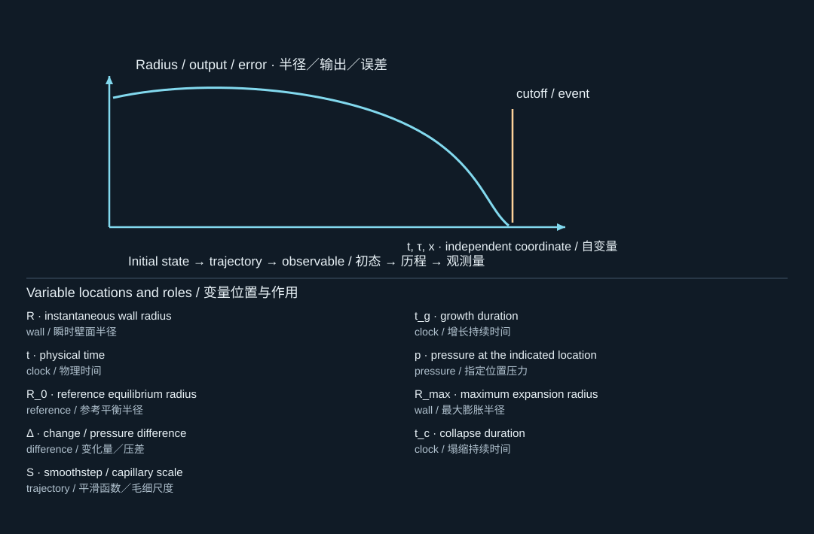
The diagram locates the physical system; its key lists the symbols in the formula. Read the definition in the surrounding derivation when a letter has different roles.
图示标出物理体系，图例列出公式中的符号。若某字母有多种作用，应以邻近推导中的定义为准。
The zero endpoint derivatives prevent artificial velocity and acceleration jumps. This is the stated purpose of the prescribed trajectory. [S1, p. 3]
端点处一阶与二阶导数为零，可避免速度和加速度出现人为跳变。这正是原始材料构造该规定轨迹的目的。[S1，第3页]
Because has its maximum at ,
由于 在 处达到最大值，
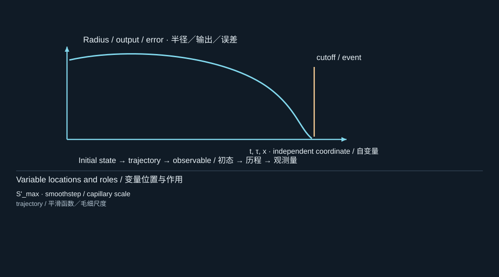
The diagram locates the physical system; its key lists the symbols in the formula. Read the definition in the surrounding derivation when a letter has different roles.
图示标出物理体系，图例列出公式中的符号。若某字母有多种作用，应以邻近推导中的定义为准。
Therefore,
因此
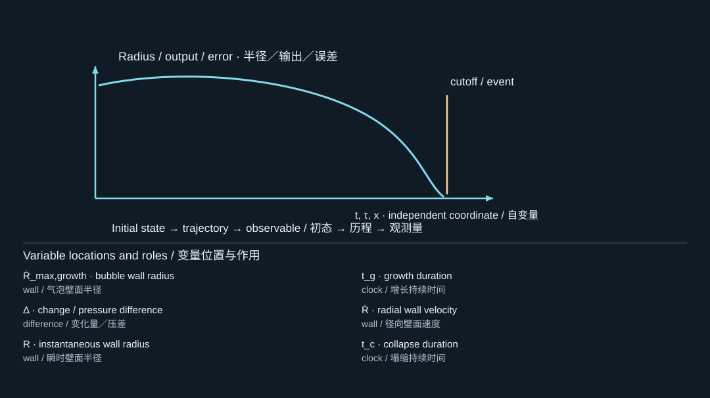
The diagram locates the physical system; its key lists the symbols in the formula. Read the definition in the surrounding derivation when a letter has different roles.
图示标出物理体系，图例列出公式中的符号。若某字母有多种作用，应以邻近推导中的定义为准。
Using the supplied values
代入所提供的数值
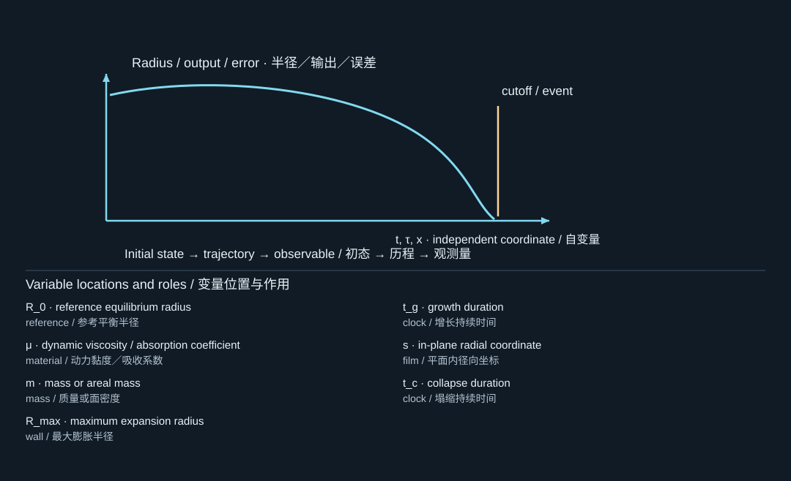
The diagram locates the physical system; its key lists the symbols in the formula. Read the definition in the surrounding derivation when a letter has different roles.
图示标出物理体系，图例列出公式中的符号。若某字母有多种作用，应以邻近推导中的定义为准。
gives
得到
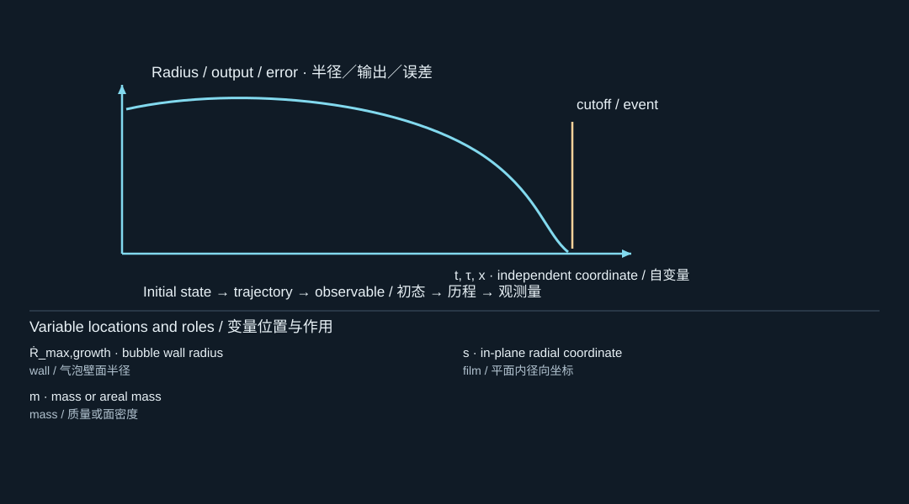
The diagram locates the physical system; its key lists the symbols in the formula. Read the definition in the surrounding derivation when a letter has different roles.
图示标出物理体系，图例列出公式中的符号。若某字母有多种作用，应以邻近推导中的定义为准。
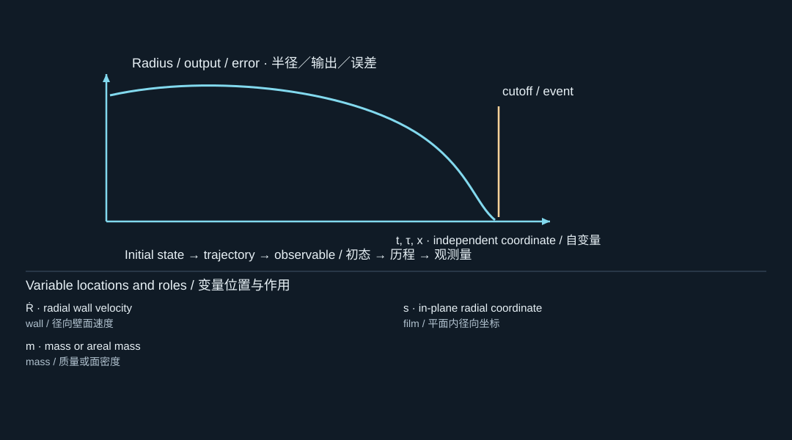
The diagram locates the physical system; its key lists the symbols in the formula. Read the definition in the surrounding derivation when a letter has different roles.
图示标出物理体系，图例列出公式中的符号。若某字母有多种作用，应以邻近推导中的定义为准。
This exactly reproduces the reported maximum wall speed. It follows from the chosen polynomial and timings—not independently predicted cavitation dynamics. [S1, p. 5]
这精确复现了原始材料报告的最大壁面速度。该数值来自选定的多项式与时间参数，而不是独立预测得到的空化动力学结果。[S1，第5页]
3.6 Mapping bubble pressure onto a load disk
将气泡压力映射至载荷圆盘
Let the bubble centre be a distance from a plane. Use for radial distance along that plane. Then the distance from the bubble centre to a point on the plane is
设气泡中心距某平面的距离为 ，以 表示该平面上的径向距离。则气泡中心到平面上某点的距离为
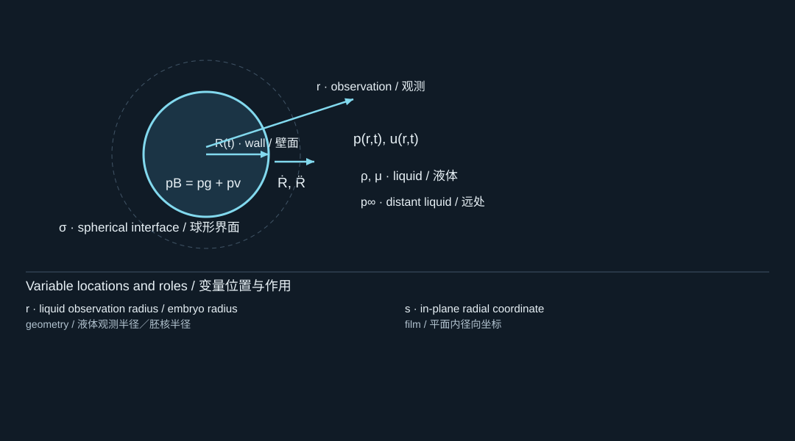
The diagram locates the physical system; its key lists the symbols in the formula. Read the definition in the surrounding derivation when a letter has different roles.
图示标出物理体系，图例列出公式中的符号。若某字母有多种作用，应以邻近推导中的定义为准。
Substitution into the spherical pressure field gives
代入球对称压力场，得到
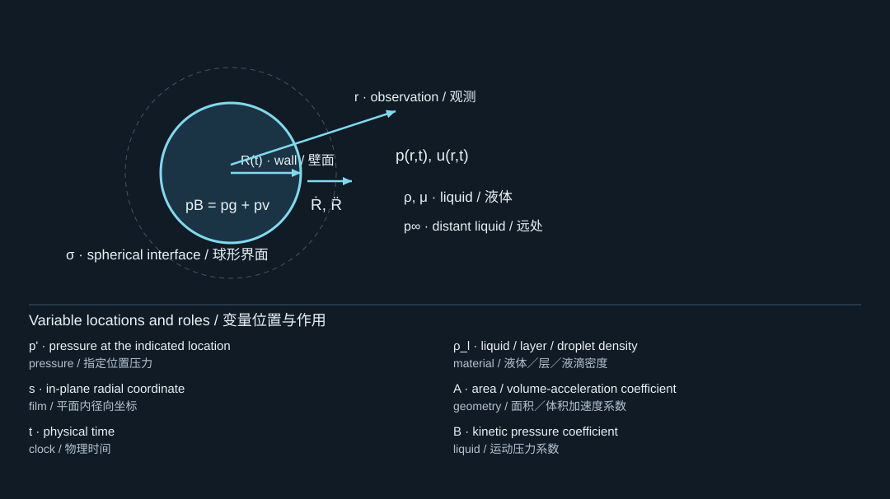
The diagram locates the physical system; its key lists the symbols in the formula. Read the definition in the surrounding derivation when a letter has different roles.
图示标出物理体系，图例列出公式中的符号。若某字母有多种作用，应以邻近推导中的定义为准。
The average over a disk of radius is
在半径为 的圆盘上的平均压力为
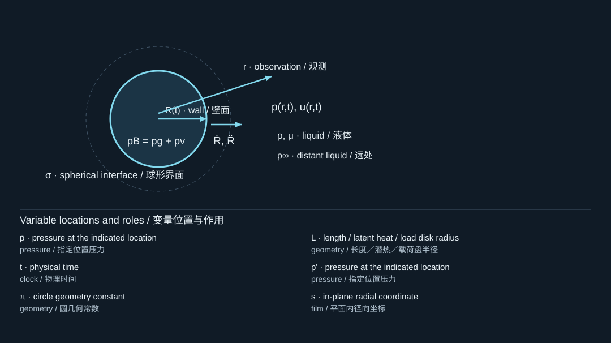
The diagram locates the physical system; its key lists the symbols in the formula. Read the definition in the surrounding derivation when a letter has different roles.
图示标出物理体系，图例列出公式中的符号。若某字母有多种作用，应以邻近推导中的定义为准。
The required integrals are
所需积分为
The diagram locates the physical system; its key lists the symbols in the formula. Read the definition in the surrounding derivation when a letter has different roles.
图示标出物理体系，图例列出公式中的符号。若某字母有多种作用，应以邻近推导中的定义为准。
and
以及

The diagram locates the physical system; its key lists the symbols in the formula. Read the definition in the surrounding derivation when a letter has different roles.
图示标出物理体系，图例列出公式中的符号。若某字母有多种作用，应以邻近推导中的定义为准。
Hence,
因此
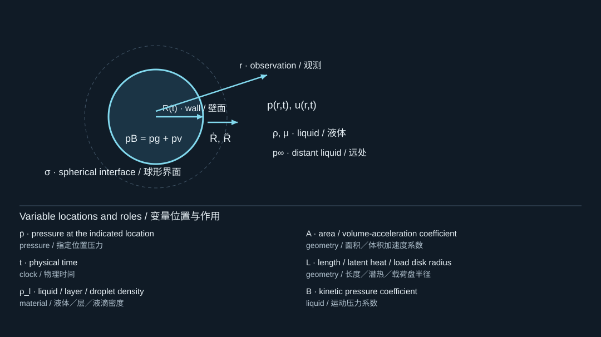
The diagram locates the physical system; its key lists the symbols in the formula. Read the definition in the surrounding derivation when a letter has different roles.
图示标出物理体系，图例列出公式中的符号。若某字母有多种作用，应以邻近推导中的定义为准。
This reconstructs the load-disk average on source page 3. [S1, p. 3]
这就重构了原始材料第3页给出的载荷圆盘平均压力。[S1，第3页]
As a check, letting recovers the axis value,
作为检查，令 ，可以恢复轴线上的压力值：
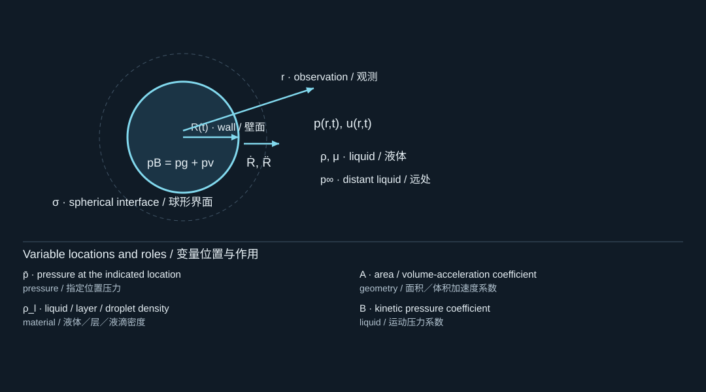
The diagram locates the physical system; its key lists the symbols in the formula. Read the definition in the surrounding derivation when a letter has different roles.
图示标出物理体系，图例列出公式中的符号。若某字母有多种作用，应以邻近推导中的定义为准。
3.7 What the signed pressure does—and does not—mean
带符号压力的含义与局限
The signs follow from the acceleration terms, not simply from the sign of . Growth acceleration, growth deceleration, collapse acceleration, and collapse deceleration can generate different pressure branches.
压力的正负号来自加速度相关项，而不只是由 的符号决定。增长加速、增长减速、塌缩加速与塌缩减速可能产生不同的压力分支。
The model consequently produces a time-dependent signed load. Replacing it by a constant positive pressure would change the structural problem. The source specifically emphasizes the relative timing of these branches. [S1, p. 3]
因此，该模型产生的是一个随时间变化、具有正负号的载荷。如果用恒定正压替代它，就会改变结构问题本身。原始材料特别强调这些分支之间的相对时序。[S1，第3页]
However, there are two important limits.
不过，这里存在两项重要限制。
First, the reported stand-off ratio is
第一，原始材料报告的距壁比为
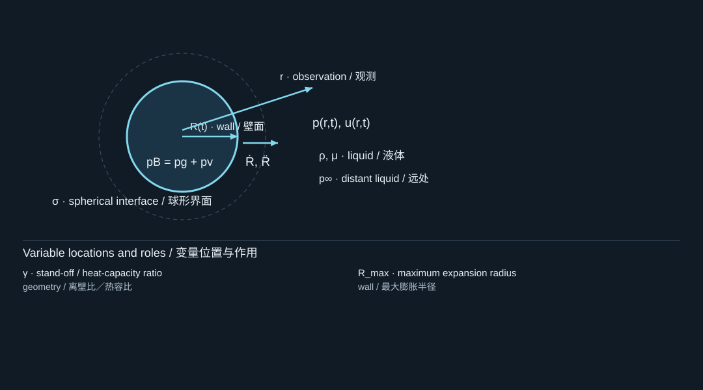
The diagram locates the physical system; its key lists the symbols in the formula. Read the definition in the surrounding derivation when a letter has different roles.
图示标出物理体系，图例列出公式中的符号。若某字母有多种作用，应以邻近推导中的定义为准。
With , this implies . The bubble is close to the boundary, whereas the pressure expression was derived for an unbounded spherical flow. Evaluating it on a plane does not enforce a real wall boundary condition. The source therefore does not claim validated near-wall pressure, jetting, or shock prediction. [S1, p. 3]
当 时，可得 。此时气泡非常接近边界，但压力表达式是在无界球对称流动下推导的。仅仅在一个平面上计算该表达式，并不能满足真实壁面的边界条件。因此，原始材料并未声称已经预测出经验证的近壁压力、射流或冲击波。[S1，第3页]
Second,
第二，
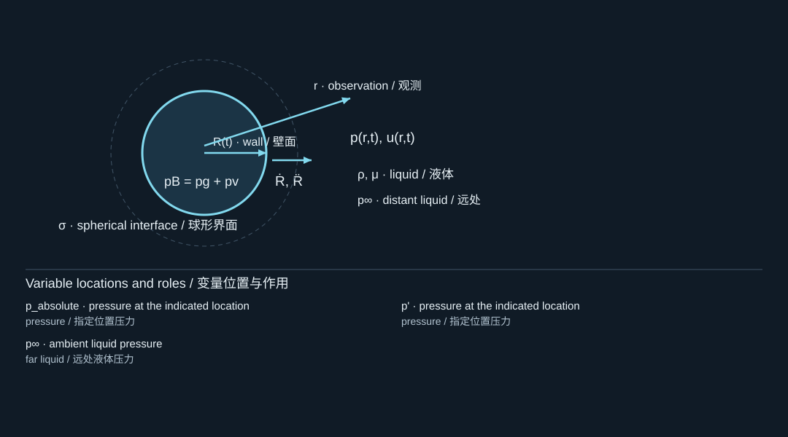
The diagram locates the physical system; its key lists the symbols in the formula. Read the definition in the surrounding derivation when a letter has different roles.
图示标出物理体系，图例列出公式中的符号。若某字母有多种作用，应以邻近推导中的定义为准。
The source explicitly flags its negative source branch as failing the reference absolute-pressure check. That branch cannot simply be treated as a validated physical load and passed downstream. [S1, p. 5]
原始材料明确指出，其负压源分支未通过参考情景的绝对压力检查。因此，不能直接将该分支视为经验证的物理载荷，并传递给下游模型。[S1，第5页]
This is a limitation of this calculation, not a universal statement that liquids cannot sustain tension: metastable liquids can sustain negative pressure under appropriate conditions. Such behaviour requires its own nucleation and metastability description, which is absent here. [R2]
这是当前计算本身的限制，并不是说液体普遍不能承受拉伸：在适当条件下，亚稳态液体能够承受负压。但描述这种行为需要相应的成核与亚稳态模型，而当前模型中没有这些内容。[R2]